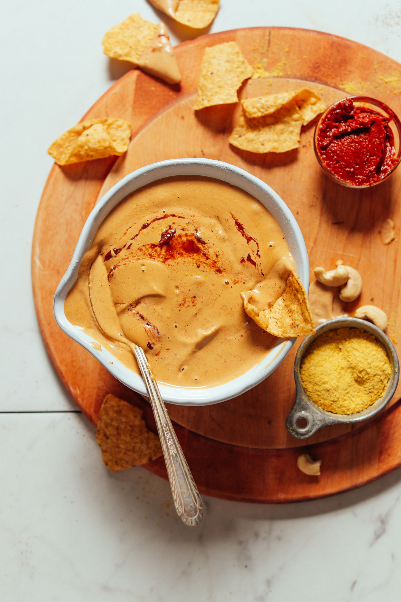

Vegan Queso

Creamy vegan queso ready in just 5 minutes! Cheesy, quick and easy to make, and perfect for
serving with nachos,
burrito bowls, tacos, and more!
Ingredients
- 3/4 – 1 cup hot water
- 1 cup raw cashews
- 1 clove garlic, choppedA
- 2 Tbsp nutritional yeast
- 1/2 tsp ground cumin
- 1 tsp chili powder
- 1/2 tsp salt, plus more to taste
- 1 Tbsp harissa (or sub hot salsa, hot sauce, Ro-Tel, or 1 chipotle pepper in adobo sauce // plus more for
garnish)
Instructions
- Add all ingredients to a blender (starting with the lesser amount of water) and blend until creamy, adding
more water as needed to blend until creamy and smooth. We recommend a small blender (we prefer the
NutriBullet), or a high-speed blender. Add just enough water to achieve a creamy, pourable queso. If it gets
too thin, thicken with additional raw cashews.
- Taste and adjust flavor as needed, adding more nutritional yeast for cheesiness, salt to taste, cumin for
smokiness, chili powder or harissa for heat, or garlic for zing. It should be quite flavorful, so don’t be
shy.
- Serve with chips or add to things like tacos, nachos, burritos, and more! Garnish with additional harissa or
a spoonful of fresh salsa or hot sauce for serving (optional).
- Store leftovers covered in the refrigerator up to 5-7 days, or in the freezer up to 1 month. To thaw from
frozen, set in refrigerator for 24-48 hours. Reheat in microwave or in a small saucepan over medium-low
heat. Add more water as needed if it thickens when reheating.